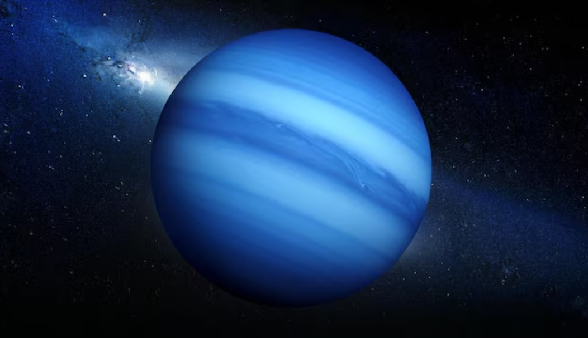

Neptune
Neptune is the eighth and farthest planet from the Sun. It is an ice giant known for its deep blue colour and extremely strong winds.
Neptune`s atmosphere is made mostly of hydrogen, helium, and methane, which gives it its blue appearance. It is one of the coldest planets in the solar system and has a very active weather system.

Facts About Neptune
- Neptune is the farthest planet from the Sun.
- It has the strongest winds in the solar system.
- Neptune appears blue due to methane in its atmosphere.
- It takes about 165 Earth years to orbit the Sun.
- Neptune has 14 known moons.